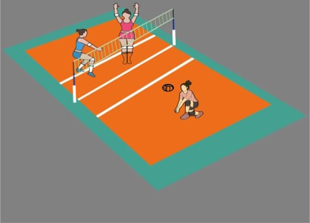
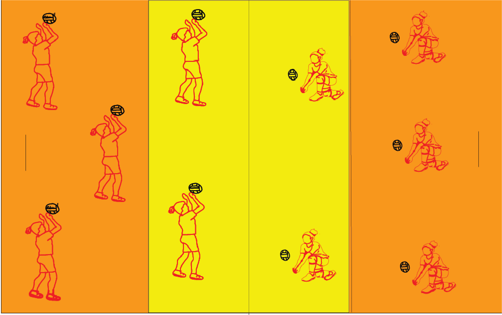

Acontece após o saque, a técnica usada para fazer a recepção é a MANCHETE e o objetivo do jogador que faz a recepção é colocar a bola na mão do levantador. Levantamento - Acontece após a recepção, a técnica utilizada é o TOQUE e tem como objetivo preparar a bola para um ataque.

imagem de exemplo

imagem de exemplo
VIDEO PARA APOIO
QUAL A FUNÇAO DA RECEPÇAO?
é jogada de defesa que recebe o saque. Uma recepção bem feita possibilita um desempenho melhor no ataque da equipe. A recepção costuma ser realizada através do toque ou da manchete.
A recepção tem como objetivo fazer com que a bola perca força e velocidade, facilitando, assim, o levantamento. A ação de receber a bola é realizada pelo jogador que ocupa a posição 6 ou pelo líbero da equipe, após o ataque adversário. A recepção é o primeiro contato de uma equipe com a bola.